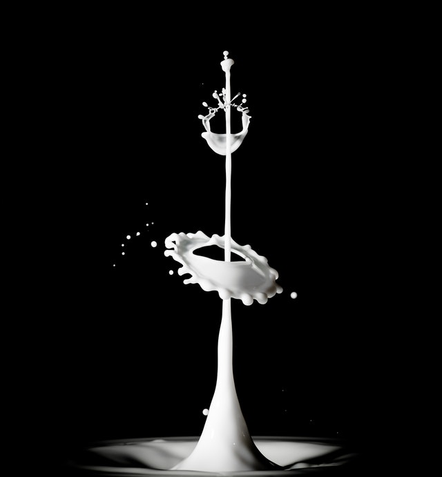

<section class="about py-5" id="about">
  <div class="container">
    <div class="row">
      <div class="col-10 mx-auto col-md-6 my-5">
        <h1 class="text-capitalize">
          about <strong class="banner-title">us</strong>
        </h1>
        <p class="my-4 text-muted w-75">
          Children and adolescents should be encouraged to consume milk products
          because this is the period of their lives in which they are building
          their peak bone mass and developing lifelong habits. This article
          highlights the benefits of milk and milk products, as well as common
          misconceptions.<br />
          A production plant for processing dairy products is called a dairy or
          a dairy factory. Dairy products are generally defined as food products
          that are produced from milk. They are rich sources of energy. Raw milk
          for processing generally comes from cows, but occasionally from other
          mammals such as goats, sheep, and water buffalo. Water is the main
          constituent of milk (about 90%).<br />
          Milk of various types (including whole milk, skim milk, buttermilk),
          yoghurt, cheese (e.g. Swiss cheese, cheddar cheese, cottage cheese),
          and ice cream are dairy products. Of all milk products, milk, yoghurt
          and cheese are the best sources of calcium.<br />
          Dairy products and alternatives such as calcium-fortified soy products
          are nutritious foods, and provide benefit when consumed as part of a
          nutritionally balanced diet which includes all of the 5 food
          groups:<br />

          Breads and cereals;<br />
          Vegetables and fruits;<br />
          Dairy products/alternatives;<br />
          Meat/chicken/fish/alternatives; and<br />
          A small amount of fats and oils.
        </p>
      </div>
      <div class="col-10 mx-auto col-md-6 my-5 align-self-center">
        <div class="about-img__container">
          
        </div>
      </div>
    </div>
  </div>
</section>
